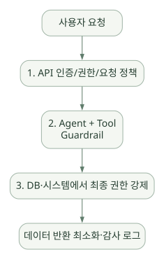

핵심 원리 / 단원 05
검사 시점과 실제 보안 경계
입력·출력·도구 검사와 서버의 강제 권한
먼저 연결해 보기
Guardrail은 어디에 적용되고 언제 완료되는지에 따라 통제 범위가 달라집니다. 원문은 병렬 입력 검사에서 검사 완료 전에 일부 Agent 작업이나 도구 실행이 일어날 수 있다는 점을 강조합니다.
위험한 작업은 입력 검사의 결과만 기다리는 구조로 보호하지 말고, Agent 시작 전 인증·인가와 Tool·DB의 실제 권한으로 제한해야 합니다. 출력 검사는 이미 발생한 외부 부작용을 되돌리는 기능이 아닙니다.
읽는 관점검사 실패 전에 어떤 작업이 이미 일어날 수 있는지, 각 계층이 무엇을 차단하는지 확인하세요.
12. Guardrails: 검증 계층과 실제 보안 한계#
12.1 Guardrails의 종류#
| 종류 | 대상 | 언제 동작? | 대표 목적 |
|---|---|---|---|
| Agent 입력 Guardrail | 첫 Agent에 들어온 입력 | 실행 시작 시 | 사용자 요청 분류·차단 |
| Agent 출력 Guardrail | 마지막 Agent의 최종 출력 | 종료 전 | 민감 정보·정책·형식 검사 |
| Tool 입력 Guardrail | 함수 도구의 인자 | Tool 실행 전 | 조회 범위·허용 파라미터 검증 |
| Tool 출력 Guardrail | 함수 도구의 결과 | Tool 실행 후 | 민감 컬럼·위험 값 검사 |
| 업무 코드·DB 정책 | 실제 데이터/행동 | 모든 호출 경계 | 권한, SQL 허용, 보존 정책 강제 |
공식 문서상 입력 Guardrail은 체인의 첫 Agent, 출력 Guardrail은 최종 출력 Agent를 기준으로 작동한다. Tool Guardrail은 해당 Function Tool 호출마다 적용되므로, Handoff나 nested Agent를 포함한 체인에서 세부 검증이 필요하면 Tool 경계에 배치해야 한다. [S07]
12.2 병렬 vs 차단형 입력 Guardrail — 실무상 매우 중요#
run_in_parallel=True(기본): Guardrail과 Agent가 동시에 시작할 수 있으므로 검사 실패 시 이미 일부 토큰 사용이나 도구 실행이 발생했을 수 있다.run_in_parallel=False: 입력 Guardrail을 먼저 완료한 후 Agent를 시작하므로 통과 전 모델·도구 실행을 막는 형태에 적합하다.
공정 DB에 대한 권한 검사가 입력 Guardrail뿐인 설계는 안전하지 않다. 예를 들어 사용자 FAB 권한 확인이 실패한 경우, 병렬 검사가 끝나기 전에 조회가 시작되는 경로를 남겨서는 안 된다. 따라서 인증·인가를 Agent 시작 전 업무 계층에서 결정하고 Tool 내부에서도 재검사하는 것이 안전하다. [S07]
12.3 Tripwire와 일반 Exception#
Guardrail에서 tripwire_triggered=True를 반환하면 Runner가 해당 Tripwire 예외를 발생시키는 흐름이 있다. 잘못된 파라미터로 Tool 실행을 막는 것과 단순히 최종 답변에 '그렇게 해서는 안 된다'고 쓰는 것은 전혀 다르다. 출력 Guardrail로 거부된 최종 답변은 이력 저장에서도 별도 처리 규칙이 있으므로, 실패·재개·세션 정책까지 확인한다. [S07]
12.4 검증은 적어도 세 층에 놓는다#
넓은 도식은 가로로 이동하며 읽을 수 있습니다. 도식 크게 보기 ↗

원문에 수록된 학습용 도식입니다. 노드·화살표·분기 라벨을 보존해 다시 배치했습니다. 세부 조건과 예시·구현의 구분은 앞뒤 본문을 함께 읽으세요.
도식 원문 보기 (Mermaid)
flowchart TD
U[사용자 요청] --> A[1. API 인증/권한/요청 정책]
A --> M[2. Agent + Tool Guardrail]
M --> D[3. DB·시스템에서 최종 권한 강제]
D --> O[데이터 반환 최소화·감사 로그]- 앱 권한: 요청자는 누구이고 어떤 FAB/Project의 데이터를 조회할 수 있는가?
- Agent/Tool 정책: 어떤 도구·파라미터·민감 데이터가 허용되는가?
- 데이터 계층: 최소 권한 계정, 읽기 전용 view, 행 필터링, 실행 시간·반환 행 수 제한.
프롬프트 인젝션은 외부 문서, Tool 결과, MCP 메타데이터, 사용자 입력에서 유입될 수 있다. 출처 없는 문장의 지시를 시스템 명령이나 권한 변경으로 승격하지 않는다.